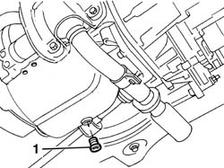
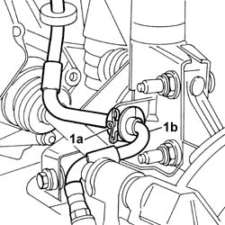

1020A30 ENGINE OIL DRAIN PLUG - REPLACE
- Path
- Procedures > 10 ENGINE UNIT > 1020 CRANKCASE SUMP AND COVERS > 1020A CRANK CASE OIL SUMP > 1020A30 ENGINE OIL DRAIN PLUG - REPLACE
- Kind
- repair procedure (removal / refitting; the operation number is the code)
- Applies to
- all engines; all production periods
- Interactive page
- https://sloeber94.github.io/elrnDB-fPnd/en/#/2752424
Applies to: engines: 1.1; all production periods
 Removing
Removing
 Refitting
Refitting
Applies to: engines: 1.2 8v; all production periods
Removing
RefittingPosition the vehicle on a lift.
Raise the vehicle.
Op. 7055B54 UNDER-ENGINE GUARD - R R
1. Undo the plug and drain the engine oil into a suitable container.
Keep the metal gasket underneath.
Applies to: engines: 1.2 8v; all production periods
Refitting
RemovingReplace the metal gasket.
Tighten the engine oil drain plug.
Op. 7055B54 UNDER-ENGINE GUARD - R R
Lower the vehicle.
Op. 0010T11 ENGINE OIL CHECK LEVEL AND TOP UP
Remove the vehicle from the lift.
Applies to: engines: 1.3 JTD 16v; all production periods
Removing
Refitting